Gabès – L’oasis maritime unique
Le Gouvernorat de Gabès est un pôle industriel majeur et une région côtière située dans le sud-est de la Tunisie, réputée pour son oasis balnéaire unique au bord de la mer Méditerranée. Son économie repose sur l'agriculture, la pêche et l'industrie chimique de transformation du phosphate.
Gabès est située sur la façade littorale orientale de la Tunisie, à environ 365 kilomètres au sud de la capitale, Tunis. Elle est délimitée par le gouvernorat de Sfax au nord, Médenine au sud, la mer Méditerranée à l'est (avec 80 km de côte), et Kébili et Gafsa à l'ouest. La région présente un relief varié, incluant une zone montagneuse (Matmata), une plaine et le littoral
Connue depuis l'Antiquité, Gabès fut une importante garnison militaire sous le protectorat français. La ville s'est développée et enrichie grâce à la découverte de pétrole dans le golfe, devenant une plaque tournante du tourisme moderne. On y trouve des monuments du XVIIe siècle, comme des mosquées et le mausolée de Sidi Boulbaba, ainsi que des habitats troglodytiques dans les régions sahariennes voisines.
Profitez de la beauté unique de cette oasis balnéaire où la verdure luxuriante rencontre la mer Méditerranée.
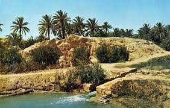
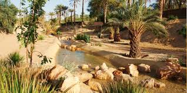
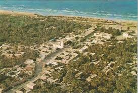
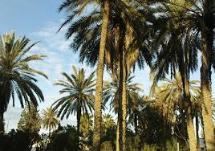
Explorez les environs de cette ville voisine, célèbre pour ses paysages lunaires et ses traditionnels habitats troglodytiques, dont l'Hôtel Sidi Driss (lieu de tournage de Star Wars).p>
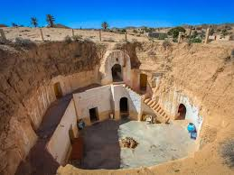
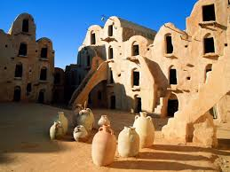
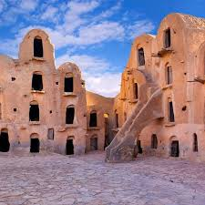
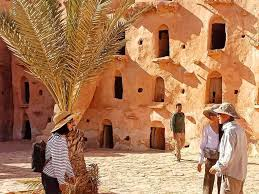
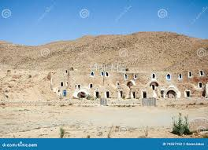
Plongez dans l'ambiance locale et découvrez l'artisanat et les produits régionaux dans ces marchés traditionnels.
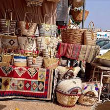
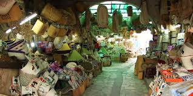
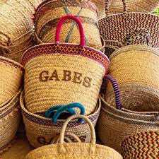
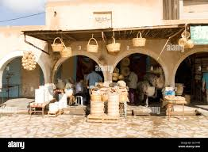
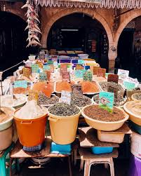